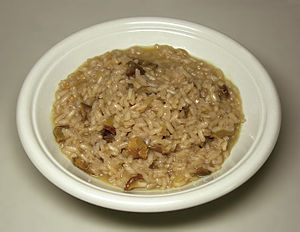

Risotto

- Chicken broth
- Olive oil
- Mushrooms
- Shallots
- Arborio rice
- White wine
- Butter
- Parmesan cheese
- Chives
- Warm broth in a saucepan over low heat.
- Meanwhile, warm 2 tablespoons olive oil in a large saucepan over medium-high heat. Add portobello and white mushrooms; cook and stir until soft, about 3 minutes. Remove mushrooms and their liquid to a bowl; set aside
- Add remaining 1 tablespoon olive oil to the saucepan. Stir in shallots and cook for 1 minute. Add rice; cook and stir until rice is coated with oil and pale, golden in color, about 2 minutes
- Pour in wine, stirring constantly until wine is fully absorbed. Add 1/2 cup warm broth to the rice, and stir until the broth is absorbed. Continue adding broth, 1/2 cup at a time, stirring constantly, until the liquid is absorbed and the rice is tender, yet firm to the bite, about 15 to 20 minutes.
- Remove from heat. Stir in reserved mushrooms and their liquid, butter, chives, and Parmesan cheese. Season with salt and pepper and serve immediately